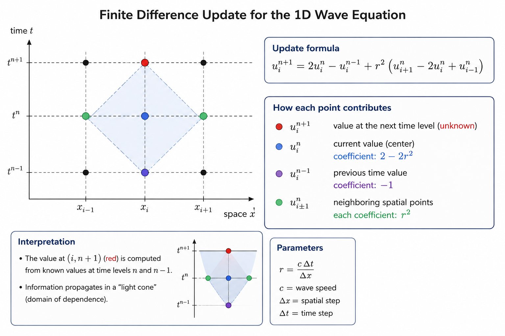
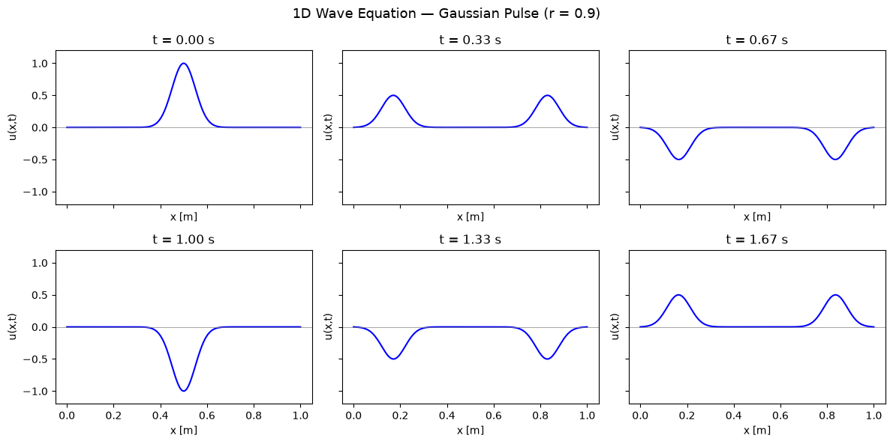
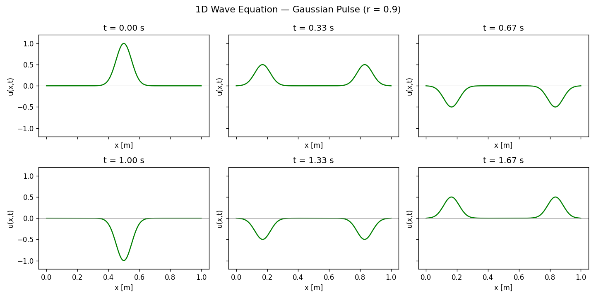
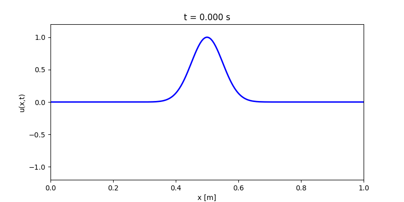
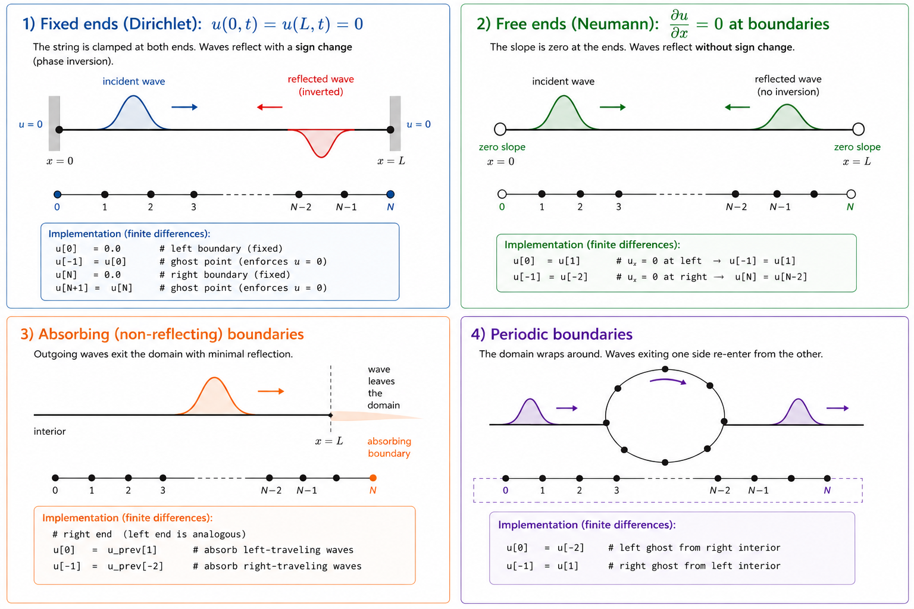
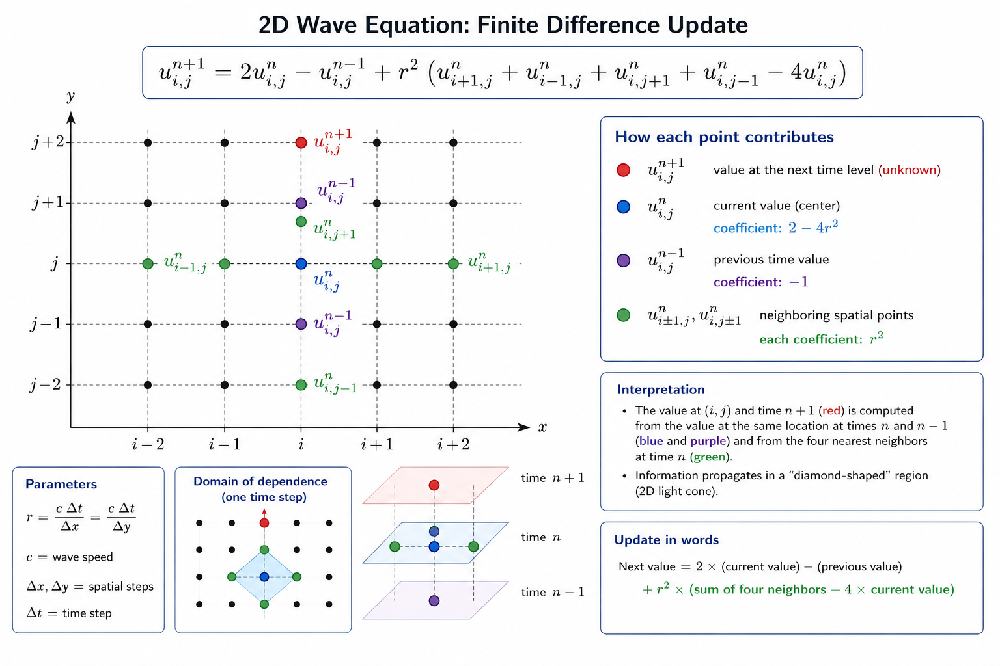
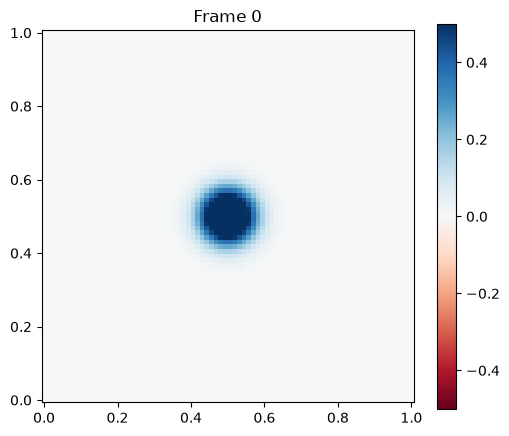
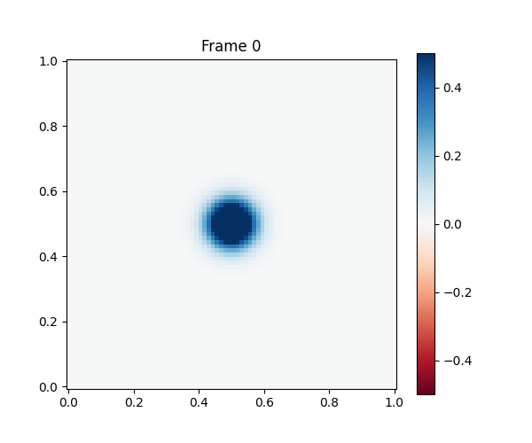
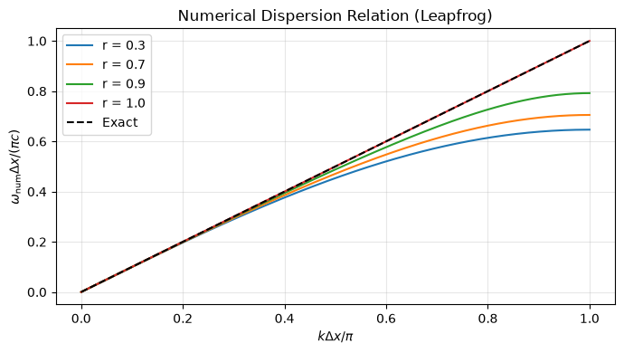
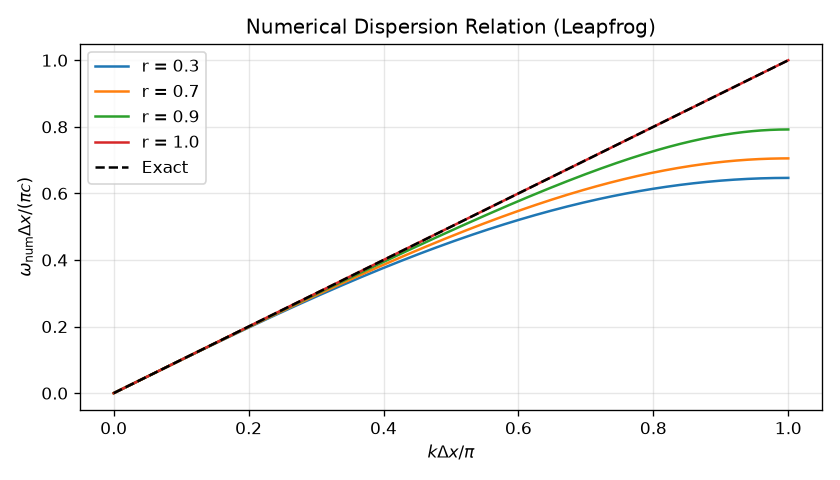

The Wave Equation#
Vibrations and Waves#
Many physical systems exhibit oscillatory motion. Unlike the heat equation (which describes irreversible diffusion), the wave equation describes reversible, finite-speed propagation. It appears in:
System |
Field \(u\) |
Wave speed \(c\) |
|---|---|---|
Vibrating string |
transverse displacement |
\(c = \sqrt{T/\mu}\) (\(T\)=tension, \(\mu\)=linear density) |
Acoustic waves |
pressure / density |
\(c \approx 343\) m/s in air |
Electromagnetic waves |
\(E\), \(B\) fields |
\(c = 1/\sqrt{\epsilon_0\mu_0} \approx 3\times10^8\) m/s |
Seismic P-waves |
rock displacement |
\(\sim\) 6 km/s in crust |
Quantum mechanics |
probability amplitude |
(Schrödinger, related form) |
The simplest mathematical model describing this behavior is the wave equation. For more info see https://en.wikipedia.org/wiki/Wave_equation?useskin=vector.


embed("https://visualpde.com/sim/?preset=waveEquation3D")
Derivation from a Vibrating String#

Consider a string under tension \(T\) with linear mass density \(\mu\).
Let
represent the transverse displacement.
Applying Newton’s second law to a small segment yields
Defining
we obtain
This is the one-dimensional wave equation.
D’Alembert’s General Solution (1D)#
The general solution to the 1D wave equation is remarkably simple:
where \(f\) and \(g\) are arbitrary functions determined by initial conditions. This tells us:
\(f(x - ct)\): a waveform traveling to the right at speed \(c\).
\(g(x + ct)\): a waveform traveling to the left at speed \(c\).
Key insight: Information propagates at exactly speed \(c\) — no faster, no slower. This is the defining feature of hyperbolic PDEs and the origin of the concept of causality in physics.
Finite Difference Approximation#
Discretize space:
and time:
Approximating derivatives,
Substitution gives
where
{kind=link}

Starting the Scheme: The First Step#
Because the leapfrog scheme needs \(n=0\) and \(n=1\) to compute \(n=2\), but we only have the initial condition at \(n=0\), we use the initial velocity condition \(\partial u/\partial t |_{t=0} = v_0(x)\) to construct the first step. Using a centered difference in time:
and substituting a “ghost” time level \(n=-1\) into the leapfrog formula, one obtains:
This is second-order accurate in \(\Delta t\).
Stability: The CFL Condition#
Von Neumann Analysis#
Substituting a Fourier mode \(u_i^n = \xi^n e^{ik x_i}\) into the leapfrog scheme and solving for the amplification factor \(\xi = |u_{i+1}/u_{i}|\) gives:
For stability we need \(|\xi| \le 1\) for all wavenumbers \(k\). This is satisfied if and only if:
This is the Courant–Friedrichs–Lewy (CFL) condition.
Physically, the numerical propagation speed must not exceed the grid resolution.
Numerical example#
import numpy as np
import matplotlib.pyplot as plt
from matplotlib.animation import FuncAnimation
# ── Problem parameters ──────────────────────────────────────────────────────
L = 1.0 # domain length [m]
c = 1.0 # wave speed [m/s]
T = 2.0 # total simulation time [s]
NX = 200 # number of spatial points
r = 0.9 # Courant number (must be ≤ 1 for stability)
# ── Grid ────────────────────────────────────────────────────────────────────
dx = L / (NX - 1)
dt = r * dx / c
NT = int(T / dt)
x = np.linspace(0, L, NX)
print(f"dx={dx:.4f}, dt={dt:.4f}, NT={NT}, CFL r={r}")
dx=0.0050, dt=0.0045, NT=442, CFL r=0.9
# ── Initial conditions ───────────────────────────────────────────────────────
def initial_displacement(x):
"""Gaussian pulse centered in the domain."""
x0, sigma = 0.5, 0.05
return np.exp(-((x - x0)**2) / (2 * sigma**2))
def initial_velocity(x):
"""Zero velocity: pulse starts from rest."""
return np.zeros_like(x)
# ── Boundary conditions ──────────────────────────────────────────────────────
def apply_bc(u):
"""Fixed (Dirichlet) boundary conditions: u=0 at both ends."""
u[0] = 0.0
u[-1] = 0.0
# ── Leapfrog solver ──────────────────────────────────────────────────────────
def solve_wave_1d(x, dx, dt, NT, c, r, u_init, v_init, apply_bc):
NX = len(x)
u_prev = u_init(x).copy()
v0 = v_init(x)
# First step: special formula using initial velocity
u_curr = np.zeros(NX)
u_curr[1:-1] = (u_prev[1:-1]
+ dt * v0[1:-1]
+ 0.5 * r**2 * (u_prev[2:] - 2*u_prev[1:-1] + u_prev[:-2]))
apply_bc(u_curr)
history = [u_prev.copy(), u_curr.copy()]
# Main leapfrog loop
for n in range(2, NT):
u_next = np.zeros(NX)
u_next[1:-1] = (2*u_curr[1:-1] - u_prev[1:-1]
+ r**2 * (u_curr[2:] - 2*u_curr[1:-1] + u_curr[:-2]))
apply_bc(u_next)
history.append(u_next.copy())
u_prev = u_curr
u_curr = u_next
return np.array(history)
# Run
sol = solve_wave_1d(x, dx, dt, NT, c, r,
initial_displacement, initial_velocity, apply_bc)
# ── Static plot: snapshots at different times ─────────────────────────────────
fig, axes = plt.subplots(2, 3, figsize=(12, 6), sharex=True, sharey=True)
axes = axes.flatten()
display_times = np.linspace(0, T, 6, endpoint=False)
for ax, t_display in zip(axes, display_times):
idx = int(t_display / dt)
ax.plot(x, sol[idx], 'b-', lw=1.5)
ax.set_title(f't = {t_display:.2f} s')
ax.set_ylim(-1.2, 1.2)
ax.set_xlabel('x [m]')
ax.set_ylabel('u(x,t)')
ax.axhline(0, color='gray', lw=0.5)
fig.suptitle('1D Wave Equation — Gaussian Pulse (r = 0.9)', fontsize=13)
fig.tight_layout()
#plt.savefig('fig/wave1d_snapshots.png', dpi=120)
plt.show()

{kind=link}

# ── Animation ─────────────────────────────────────────────────────────────────
fig, ax = plt.subplots(figsize=(8, 4))
line, = ax.plot(x, sol[0], 'b-', lw=2)
ax.set_xlim(0, L)
ax.set_ylim(-1.2, 1.2)
ax.set_xlabel('x [m]')
ax.set_ylabel('u(x,t)')
title = ax.set_title('')
SKIP = 5 # plot every SKIP steps to speed up animation
frames = range(0, NT, SKIP)
def update(frame):
line.set_ydata(sol[frame])
title.set_text(f't = {frame*dt:.3f} s')
return line, title
ani = FuncAnimation(fig, update, frames=frames, interval=30, blit=True)
#ani.save('fig/wave1d.gif', writer='pillow', fps=30)
plt.close()
#plt.show()
# To save: ani.save('wave1d.gif', writer='pillow', fps=30)
{kind=link}

Boundary Conditions and Their Physics#
Fixed ends (Dirichlet): \(u(0,t) = u(L,t) = 0\)#
Models a string clamped at both ends. Waves reflect with a sign change (phase inversion). This is the case for most string instruments.
def bc_fixed(u):
u[0] = u[-1] = 0.0
Free ends (Neumann): \(\partial u/\partial x = 0\) at boundaries#
Models a free membrane edge or an open acoustic pipe. Waves reflect without sign change. Use a ghost-point approach:
def bc_free(u):
u[0] = u[1] # du/dx = 0 at left → u[-1] ≡ u[1]
u[-1] = u[-2] # du/dx = 0 at right → u[N] ≡ u[N-2]
Absorbing (non-reflecting) boundaries#
To simulate an infinite domain, you can implement simple absorbing conditions. At the right end:
This attempts to absorb outgoing right-traveling waves.
def bc_absorbing(u, u_prev):
u[0] = u_prev[1] # absorb left-traveling waves
u[-1] = u_prev[-2] # absorb right-traveling waves
Periodic boundaries#
Useful for waves in a ring or periodic media:
def bc_periodic(u):
u[0] = u[-2]
u[-1] = u[1]
A picture illustrating boundary conditions#
{kind=link}

Exercises#
Exercise 12 (Free ends bc)
Implement free ends boundary conditions.
Exercise 13 (Absorbing bc)
Implement absorbing boundary conditions.
Exercise 14 (Periodic bc)
Implement periodoc boundary conditions.
Exercise 15 (Dispersion)
Change the pulse width and study dispersion.
Exercise 16 (CFL)
Verify numerically the CFL condition.
Exercise 17 (Sinusoidal excitation)
Excite the string with
and compare with the analytical solution.
Exercise 18 (Sinusoidal excitation)
Superpose two pulses moving in opposite directions.
The 2D Wave Equation#
In 2D, the wave equation becomes:
The finite difference discretization (assuming \(\Delta x = \Delta y = \Delta\)) gives:
where \(r = c\Delta t/\Delta\). The stability condition becomes:
In general \(d\) dimensions: \(r \le 1/\sqrt{d}\).
{kind=link}

import numpy as np
import matplotlib.pyplot as plt
from matplotlib.animation import FuncAnimation
# ── 2D Wave solver ────────────────────────────────────────────────────────────
def solve_wave_2d(NX=100, NY=100, L=1.0, c=1.0, T=1.0, r=0.5):
dx = L / (NX - 1)
dy = L / (NY - 1)
dt = r * min(dx, dy) / (c * np.sqrt(2)) # 2D CFL
NT = int(T / dt)
print(f"2D: dx={dx:.4f}, dy={dy:.4f}, dt={dt:.5f}, NT={NT}")
x = np.linspace(0, L, NX)
y = np.linspace(0, L, NY)
X, Y = np.meshgrid(x, y, indexing='ij')
# Initial condition: circular Gaussian pulse
x0, y0, sigma = 0.5, 0.5, 0.05
u_prev = np.exp(-((X - x0)**2 + (Y - y0)**2) / (2 * sigma**2))
u_curr = u_prev.copy() # zero initial velocity approximation for first step
history = [u_prev.copy()]
rx2 = (c * dt / dx)**2
ry2 = (c * dt / dy)**2
for n in range(1, NT):
u_next = np.zeros((NX, NY))
u_next[1:-1, 1:-1] = (
2*u_curr[1:-1, 1:-1] - u_prev[1:-1, 1:-1]
+ rx2 * (u_curr[2:, 1:-1] - 2*u_curr[1:-1, 1:-1] + u_curr[:-2, 1:-1])
+ ry2 * (u_curr[1:-1, 2:] - 2*u_curr[1:-1, 1:-1] + u_curr[1:-1, :-2])
)
# Dirichlet BC: zero on all walls
u_next[0, :] = u_next[-1, :] = 0
u_next[:, 0] = u_next[:, -1] = 0
if n % (NT // 20) == 0:
history.append(u_next.copy())
u_prev = u_curr
u_curr = u_next
return X, Y, np.array(history)
# Run 2D simulation
X, Y, sol2d = solve_wave_2d(NX=80, NY=80, T=1.0, r=0.5)
# Animate
fig, ax = plt.subplots(figsize=(6, 5))
im = ax.pcolormesh(X, Y, sol2d[0], cmap='RdBu', vmin=-0.5, vmax=0.5)
plt.colorbar(im, ax=ax)
ax.set_aspect('equal')
title = ax.set_title('t = 0')
def update2d(frame):
im.set_array(sol2d[frame].ravel())
title.set_text(f'Frame {frame}')
return im, title
ani2d = FuncAnimation(fig, update2d, frames=len(sol2d), interval=80, blit=True)
#ani2d.save('fig/wave2d.gif', writer='pillow', fps=30)
plt.show()
plt.close()
2D: dx=0.0127, dy=0.0127, dt=0.00448, NT=223

{kind=link}

Normal Modes of a 2D Membrane (Drum)#
The rectangular membrane has analytical normal modes:
with frequencies:
For a square membrane (\(L_x = L_y = L\)), the first few mode frequencies are proportional to \(\sqrt{m^2 + n^2}\). Notably, modes \((1,2)\) and \((2,1)\) are degenerate (same frequency). Perturbations will mix degenerate modes — this is directly analogous to quantum degeneracy.
Tip
Visualizations Check https://www.youtube.com/watch?v=7nG4Y7FU-dQ and https://www.acs.psu.edu/drussell/demos.html
Dispersion and Numerical Artifacts#
Numerical Dispersion#
The leapfrog scheme introduces a modified dispersion relation. Substituting \(u_i^n = e^{i(kx_i - \omega t^n)}\):
For small \(k\Delta x\) this approaches \(\omega = ck\), but for larger wavenumbers the numerical wave speed differs from \(c\). High-frequency components travel at slightly wrong speeds — this causes a dispersive smearing of sharp initial conditions.
# Visualize numerical dispersion
import numpy as np
import matplotlib.pyplot as plt
r_vals = [0.3, 0.7, 0.9, 1.0]
kDx = np.linspace(0, np.pi, 300)
fig, ax = plt.subplots(figsize=(7, 4))
for r in r_vals:
arg = r * np.sin(kDx / 2)
arg = np.clip(arg, -1, 1) # avoid arcsin domain error
omega_num = 2 * np.arcsin(arg) / r # normalized by c/dx
ax.plot(kDx / np.pi, omega_num / np.pi, label=f'r = {r}')
# Exact (non-dispersive)
ax.plot(kDx / np.pi, kDx / np.pi, 'k--', label='Exact')
ax.set_xlabel(r'$k\Delta x / \pi$')
ax.set_ylabel(r'$\omega_{\rm num}\Delta x / (\pi c)$')
ax.set_title('Numerical Dispersion Relation (Leapfrog)')
ax.legend()
ax.grid(True, alpha=0.3)
plt.tight_layout()
plt.savefig('fig/dispersion.png', dpi=120)
plt.show()

{kind=link}

Note that \(r = 1\) gives the exact dispersion relation — the leapfrog scheme at the CFL limit is non-dispersive! This is a special property of 1D problems.
Exercises#
The Split Gaussian — Verifying D’Alembert’s Solution#
Set up a symmetric Gaussian pulse \(u(x, 0) = e^{-(x - L/2)^2/\sigma^2}\) with zero initial velocity on a very long domain (use absorbing or periodic BC to avoid reflections).
[ ] Run the simulation and plot several snapshots.
[ ] Verify that the pulse splits into two identical half-height pulses traveling in opposite directions. (Hint: D’Alembert says \(u = f(x-ct)/2 + f(x+ct)/2\) for zero initial velocity.)
[ ] Measure the speed of the pulses from your simulation and compare with the theoretical \(c\).
CFL Instability#
Using the sinusoidal initial condition \(u(x,0) = \sin(\pi x / L)\):
[ ] Simulate with \(r = 0.8, 0.95, 1.0, 1.05, 1.2\).
[ ] Plot the maximum amplitude vs time for each case.
[ ] What happens for \(r > 1\)? At what \(n\) does instability first appear?
[ ] Compare the growth rate with the theoretical prediction from the von Neumann analysis.
Boundary Conditions and Reflections#
Start with a Gaussian pulse traveling to the right.
[ ] Implement and compare: fixed ends, free ends, and absorbing boundaries.
[ ] For fixed and free ends: what is the sign of the reflected pulse? Explain physically.
[ ] Measure the reflection coefficient (ratio of reflected to incident amplitude) for each case.
Standing Waves and Normal Modes#
Use the initial condition \(u(x, 0) = \sin(n\pi x / L)\) for \(n = 1, 2, 3\) with zero initial velocity and fixed boundary conditions.
[ ] Verify that the numerical period matches the theoretical value \(T_n = 2L/(nc)\).
[ ] Take the Fourier transform of \(u(x, t)\) at a fixed point \(x = L/4\) as a function of time. Do you recover the single frequency \(f_n = c/(2L/n)\)?
[ ] Superpose two modes (\(n = 1\) and \(n = 2\)) and observe beating.
Energy Conservation#
For the fixed-end simulation with a Gaussian initial condition:
[ ] Compute and plot the discrete energy \(E^n\) as a function of time for \(r = 0.5, 0.9, 1.0\).
[ ] Is energy exactly conserved? By how much does it drift after 1000 steps?
[ ] Compare with FTCS applied to the heat equation: is the heat equation energy-conserving?
The 2D Drum#
Simulate a square membrane (\(L_x = L_y = L\)) with fixed boundaries and \(c = 1\).
[x] Initial condition: the \((m, n) = (1, 1)\) mode, \(u(x,y,0) = \sin(\pi x/L)\sin(\pi y/L)\).
[ ] Verify the period \(T_{11} = 2L/(c\sqrt{2})\).
[ ] Now use the \((1,2)\) mode. Are \((1,2)\) and \((2,1)\) degenerate? Verify numerically.
[ ] Bonus: Start with a point perturbation at the center. How does the wave pattern evolve? Compare with the ripple tank simulation.
(Advanced): Inhomogeneous Medium#
Modify the wave speed to be position-dependent: \(c(x) = c_0\left[1 + 0.5\sin(3\pi x/L)\right]\).
[ ] Implement the scheme with variable \(c(x)\):
\(u_i^{n+1} = 2u_i^n - u_i^{n-1} + r_i^2(u_{i+1}^n - 2u_i^n + u_{i-1}^n)\)
where \(r_i = c(x_i)\Delta t/\Delta x\).[ ] What stability condition do you need? (Hint: use \(\max[c(x)]\) in the CFL condition.)
[ ] Send a Gaussian pulse through the medium and observe reflection and transmission at the impedance discontinuities.